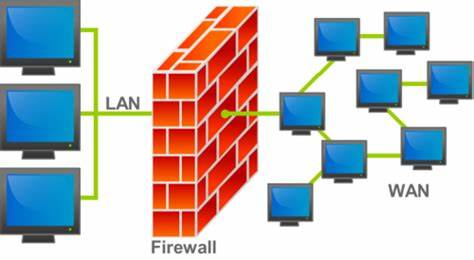
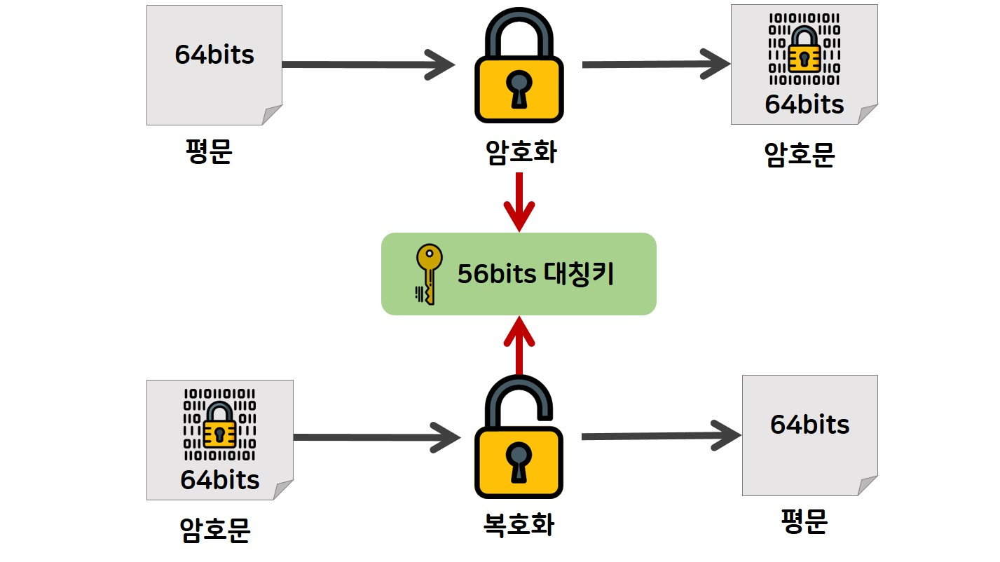
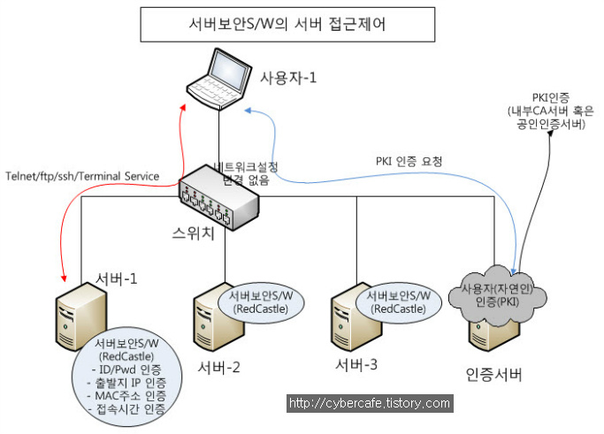

정보 보호의 정의 : 인가된 사용자만(기밀성), 완전하고 정확한 정보에(무결성), 필요로 할 때마다 접근할 수 있도록 하는 것(가용성)
컴퓨터의 보안 기술은 컴퓨터 시스템과 데이터를 악의적인 공격과 위협으로부터 보호하는 데 사용되는 기술이다.
네트워크에서 들어오는 트래픽을 모니터하고 허용되지 않은 접근을 차단하는 역할을 하는 방화벽(Firewall),
데이터의 안전한 전송을 보장하는 데이터를 읽을 수 없는 형태로 변환하여 정보 유출을 방지하는 SSL/TLS 프로토콜을 다루는 암호화(Encryption),
사용자 및 그룹에 대한 권한을 설정하여 데이터와 시스템에 접근하는 권한을 관리하고 제어하는 접근 제어(Access Control) 등의 주요 기술을 다룬다.
방화벽이란 '건물 등에 화재 발생 시 불이 번지는 것을 막기 위한 벽'을 뜻하는 것으로,
소방 시설로서의 방화벽이 특정 영역으로 불이 확산되는 것을 막아 주는 것처럼
특정 컴퓨터 네트워크를 외부의 침입으로부터 막아주기 위한 보안 장비를 의미한다.
인터넷의 확산에 따라 다량 형성된 기업 혹은 지역 단위의 사설 네트워크를 보호하기 위해 방화벽을 이용하여 보안 접근에 대한 제어를 수행한다.
암호화(Encryption)는 정보를 보호하고 비인가자로부터 보호하기 위해 사용되는 중요한 보안 기술이다.
암호화는 데이터를 변환하여 누군가가 이해할 수 없게 만드는 과정으로,
암호화된 데이터는 특정 키를 사용하여만 원래의 형태로 복호화할 수 있습니다.
접근 제어(Access Control)는 적절한 권한을 가진 인가자만 특정 시스템이나 정보에 접근할 수 있도록 통제하는 것으로,
시스템의 보안 수준을 갖추기 위한 가장 기본적 수단이다. 시스템 및 네트워크에 대한 접근 제어의 가장 기본적인 수단은 IP와 서비스 포트이다.
| 방화벽 | 암호화 | 접근 제어 |
|---|---|---|
|  |  |  |